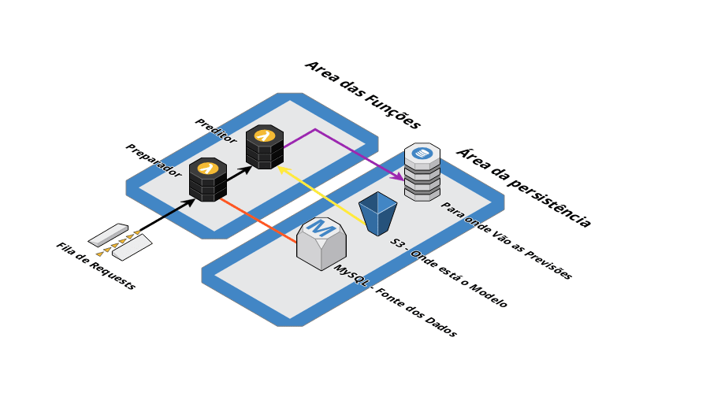

Arquitetura Serverless para Modelos de Machine Learning
Machine Learnign e a ultima milha
Depois de extensa pesquisa, treinamentos, escolhas de métricas e avaliações de modelos o que falta? Qual a ultima milha que precisamos percorrer?
Model Deployment geralmente é uma atividade deixada para os times de engenharia de dados, geralmente fica a cargo de um Engenheiro de Machine Learning descobrir como melhor tomar vantagem do produto produzido pelo Cientista de Dados. E quando essa pessoa não está disponível? Ou quando você cientista, também é essa pessoa? Quem poderá te defender?
Me deparei com essa pergunta quando tive que colocar em produção meu modelo criado após meses de estudo. Como eu posso servir minhas predições, mantendo a arquitetura da empresa e de uma maneira escalável? A resposta dessa pergunta está no título: Serverless.
Introdução ao Serverless
Eu era Engenheiro de Software antes de me tornar Cientista de Dados, e isso me fez estudar criação de produtos e arquitetura de produtos, mas nunca me interessei tanto por infraestrutura. Portanto, para eu não me incomodar tanto com essa parte e focar no produto eu precisava de uma arquitetura que me abstraísse essa etapa.
Computação Serverless é um modelo de computação em nuvem que abstrai o gerenciamento da arquitetura e qualquer atividade de baixo nivel para os provedores do serviço (pense em Google Cloud Platform e Amazon Web Services). Com isso, nós como desenvolvedores podemos pensar em criar o nosso produto sem nos preocupar com manter, gerenciar e escalar um servidor para nossa aplicação, o provedor cuida disso.
Porém, nem tudo são flores.
Quando pensamos em serverless, também devemos pensar em maneiras diferentes de oferecer os serviços. O modelo serverless preza por Function as a Service. Isso significa que devemos pensar em funções que podem ser disponibilizadas. Quebrando nosso software em diversas pequenas funções que juntas atingem um objetivo. Isso faz com que se crie uma arquitetura quese como de LEGO para o seu software: várias pequenas funções que juntas atingem um objetivo em comum. Isso pode adicionar complexidade no debug, entender limitações de hardware ou mesmo limitações de transferencia de dados entre as plataformas.
Decidir ser serverless é uma tarefa que requer bastante planejamento.
Colocando em produção
Ok, você decidiu ser serverless, escolheu a sua Framework, entendeu como ela funciona e agora está pronto para colocar seu modelo de Machine Learning em produção.
- Precisamos colocar nosso modelo na nuvem, como eu usei a AWS como provedor, fiz upload diretamente em um bucket S3 e guardei o endereço.
- Precisamos também preparar os dados antes de passar para o modelo. Portanto uma função precisa ser criada para buscar os dados no banco, realizar o preprocessamento (criar as features que serão utilizadas) e chamar a função que contém o nosso modelo.
- Aqui a gente escreve a função do nosso modelo, precisamos fazer o download do modelo do S3, utilizar os dados passados pela função anterior e salvar o output em uma tabela do DynamoDb que será consumido pela aplicação mais tarde.
- Agora só precisamos chamar a função de preprocessamento. No meu caso, eu utilizei uma fila de mensagens do AWS SQS que a aplicação alimenta, já que minhas previsões não são feitas na consulta do cliente no app, mas sim na entrada dos dados. Com isso, a fila do SQS chama a primeira função e tudo funciona magicamente.
Você pode conferir a arquitetura abaixo:

No fim, o processo todo é auto-escalável. Os resultados são salvos e consumidos posteriormente. Antes de finalizar, eu gostaria de adicionar que apesar de ter estudado a arquitetura da AWS pra Machine Learning, eu achei a maioria dos produtos muito overkill pra minha necessidade. Além da documentação deles não ser das melhores.
Caso você tenha dicas de como usar os serviços do SageMaker e das engines de ML nativas da AWS, ou queira tirar dúvidas e/ou tenha sugestões fale comigo via twitter em @claudiodavi ou manda um email pra gente conversar e trocar umas ideas em cdavisouza [at] gmail.com.